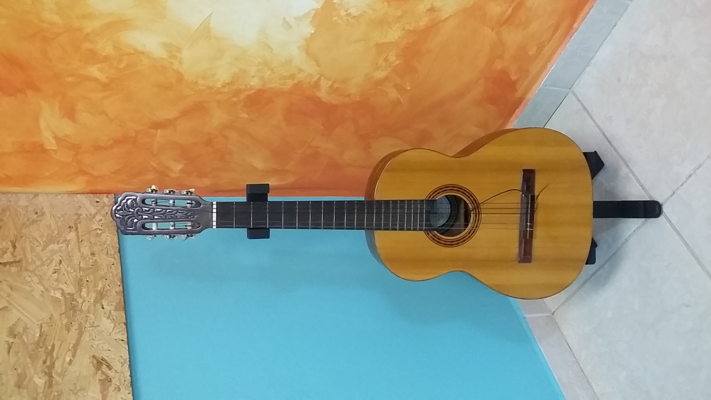

Violão e ondas

Uma Mulher Chamada Guitarra
Um dia, casualmente, eu disse a um amigo que a guitarra, ou violão, era “a música em forma de mulher”. A frase o encantou e ele a andou espalhando como se ela constituísse o que os franceses chamam un mot d’esprit. Pesa-me ponderar que ela não quer ser nada disso; é, melhor, a pura verdade dos fatos.
O violão é não só a música (com todas as suas possibilidades orquestrais latentes) em forma de mulher, como, de todos os instrumentos musicais que se inspiram na forma feminina - viola, violino, bandolim, violoncelo, contrabaixo - o único que representa a mulher ideal: nem grande, nem pequena; de pescoço alongado, ombros redondos e suaves, cintura fina e ancas plenas; cultivada mas sem jactância; relutante em exibir-se, a não ser pela mão daquele a quem ama; atenta e obediente ao seu amado, mas sem perda de caráter e dignidade; e, na intimidade, terna, sábia e apaixonada. Há mulheres-violino, mulheres-violoncelo e até mulheres-contrabaixo.
Mas como recusam-se a estabelecer aquela íntima relação que o violão oferece; como negam-se a se deixar cantar preferindo tornar-se objeto de solos ou partes orquestrais; como respondem mal ao contato dos dedos para se deixar vibrar, em benefício de agentes excitantes como arcos e palhetas, serão sempre preteridas, no final, pelas mulheres-violão, que um homem pode, sempre que quer, ter carinhosamente em seus braços e com ela passar horas de maravilhoso isolamento, sem necessidade, seja de tê-la em posições pouco cristãs, como acontece com os violoncelos, seja de estar obrigatoriamente de pé diante delas, como se dá com os contrabaixos.
Mesmo uma mulher-bandolim (vale dizer: um bandolim), se não encontrar um Jacob pela frente, está roubada. Sua voz é por demais estrídula para que se a suporte além de meia hora. E é nisso que a guitarra, ou violão (vale dizer: a mulher-violão), leva todas as vantagens. Nas mãos de um Segovia, de um Barrios, de um Sanz de la Mazza, de um Bonfá, de um Baden Powell, pode brilhar tão bem em sociedade quanto um violino nas mãos de um Oistrakh ou um violoncelo nas mãos de um Casals. Enquanto que aqueles instrumentos dificilmente poderão atingir a pungência ou a bossa peculiares que um violão pode ter, quer tocado canhestramente por um Jayme Ovalle ou um Manuel Bandeira, quer “passado na cara” por um João Gilberto ou mesmo o crioulo Zé-com-Fome, da Favela do Esqueleto.
Divino, delicioso instrumento que se casa tão bem com o amor e tudo o que, nos instantes mais belos da natureza, induz ao maravilhoso abandono! E não é à toa que um dos seus mais antigos ascendentes se chama viola d’amore, como a prenunciar o doce fenômeno de tantos corações diariamente feridos pelo melodioso acento de suas cordas… Até na maneira de ser tocado - contra o peito - lembra a mulher que se aninha nos braços do seu amado e, sem dizer-lhe nada, parece suplicar com beijos e carinhos que ele a tome toda, faça-a vibrar no mais fundo de si mesma, e a ame acima de tudo, pois do contrário ela não poderá ser nunca totalmente sua.
Ponha-se num céu alto uma Lua tranqüila. Pede ela um contrabaixo? Nunca! Um violoncelo? Talvez, mas só se por trás dele houvesse um Casals. Um bandolim? Nem por sombra! Um bandolim, com seu tremolos, lhe perturbaria o luminoso êxtase. E o que pede então (direis) uma Lua tranqüila num céu alto? E eu vos responderei: um violão. Pois dentre os instrumentos musicais criados pela mão do homem, só o violão é capaz de ouvir e de entender a Lua.
Texto de Vinícius de Moraes (1913-1980)
Além da capacidade “de ouvir e de ententer a Lua”, o violão é um instrumento musical que exibe muitos fenômenos ondulatórios.
No violão, temos a situação física da geração e propagação de ondas em cordas. Explore este fenômeno na animação a seguir, alternando entre as opções “Manual”, “Oscilador’’ e”Pulso” mostradas canto superior esquerdo.
Vamos ver aqui como podemos descrever matematicamente o movimento ondulatório numa corda.
Considere uma corda cuja extremidade da direita está fixa enquanto a outra extremidade é colocada a oscilar de cima para baixo num movimento harmônico simples de frequência angular \(\omega=2\pi f\).
A onda produzida na extremidade esquerda que se propaga da esquerda para a direita é descrita por \(y_{\rightarrow}(x,t)=A\cos(kx+\omega t)\). Ao chegar a extremidade direita, a onda é refletida e é representada por \(y_{\leftarrow}(x,t)=-A\cos(kx-\omega t)\). O sinal negativo é porque a onda é invertida ao se refletir na extremidade fixa. Você pode verificar esse fenômeno na animação acima, selecionando a opção “Manual” e movimentando a extremidade da esquerda para ver o que acontece com onda ao se refletir na outra extremidade.
A onda resultante será a superposição dessas duas ondas progressivas \(y_{\rightarrow}(x,t)\) e \(y_{\leftarrow}(x,t)\), ou seja, \(y(x,t)=y_{\rightarrow}(x,t)+y_{\leftarrow}(x,t)\). O resultado disso leva a \(y(x,t)=(2A\sin kx)\sin\omega t\).
O termo \(2A\sin kx\) mostra que, em cada instante, a forma da onda é uma senóide, com uma amplitude que depende da posição \(x\). Para cada posição, no entanto, a parte da corda oscila para cima e para baixo com frequência $omega$, de acordo com o termo \(\sin\omega t\). Pelo termo \(2A\sin kx\), vemos que, para algumas posições, a amplitude da onda será nula. Isso ocorre quando \(\sin kx=0\), ou seja, nos casos onde \(kx=0,\pi,2\pi,3\pi,\ldots\). Como \(k=2\pi/\lambda\), onde \(\lambda\) é o comprimento de onda, então essas posições serão:
\[\displaystyle x=0,\frac{\lambda}{2},\frac{2\lambda}{2}, \frac{3\lambda}{2},\ldots\]
Essas posições de amplitude nula (que não oscilam) são chamadas de nós. Na posição que correponde a metade da distância entre dois nós consecutivos, a amplitude é máxima e isso corresponde ao que se chama de ventre. Essa configuração de localização de nós e ventres que se forma ao longo da corda é fixa, estacionária, e é produzida quando se põe corda a vibrar em determinadas frequências. Por isso, a onda resultante \(y(x,t)\) corresponde a uma onda estacionária.
O vídeo a seguir mostrar o aparecimento de nós e ventres ao se oscilar uma corda nas frequências certas.
As frequências de vibração que produzem as ondas estacionárias são chamadas de frequências de ressonância ou harmônicos. Existem infinitas frequências de ressonância. São nessas frequências que há uma sincronia entre a onda incidente e a refletida, levando a formação da onda estacionária. Nessas frequências, a corda vibra no que chamamos de modos normais de vibração. Modos normais correpondem a um movimento no qual todas as partículas do sistema se movem senoidalmente com a mesma frequência. Para cada frequência de ressonância existe um modo normal, uma configuração de nós e ventres.
Considere agora que as duas extremidades da corda estão fixas e suponha que vibramos a corda de comprimento \(L\) numa frequência de ressonância, aquela que se forma uma onda estacionária. A distância entre dois nós consecutivos (ou dois ventres) é \(\lambda/2\) de modo que o comprimento da corda deve ser igual \(\lambda/2\), \(2\lambda/2\), e assim por diante. Ou seja, \(L=n\lambda/2\), \(n=1,2,3,\ldots\). Assim, uma corda de comprimento \(L\) com as duas extremidades fixas, uma onda estacionária só poderá existir quando seu comprimento de onda satisfizer \(L=n\lambda/2\), ou seja,
\[\displaystyle \lambda_n=\frac{2L}{n} \;\;\;\;(n=1,2,3,\ldots).\]
As frequências associadas aos comprimentos de onda da equação acima são \(f_n=v/\lambda_n\) onde \(v\) é a velocidade da onda se propagando na corda. A menor frequência, \(n=1\), também é chamado de menor harmônico ou frequência fundamental é
\[\displaystyle f_1=\frac{v}{2L}.\]
De forma geral, todas as frequências podem ser expressas em termos da frequência fundamental como
\[\displaystyle f_n=n\frac{v}{2L}=nf_1 \;\;\;\;(n=1,2,3,\ldots).\]
No modo normal correspondente ao primeiro harmônico (\(n=1\)) temos apenas um ventre. No modo normal correspondente ao segundo harmônico (\(n=2\)) temos dois ventres e assim por diante.
Para uma corda, a velocidade da onda que se propaga ao longo da corda é \(v=\sqrt{F/ \mu}\) onde \(F\) é a força que está sendo aplicada na corda e \(\mu\) é a densidade linear da corda (igual a massa da corda dividida pelo seu comprimento). Dessa forma, a Eq. (4) fica
\[\displaystyle f_n=n\frac{1}{2L}\sqrt{\frac{F}{\mu}} \;\;\;\;(n=1,2,3,\ldots),\]
ou ainda,
\[\displaystyle f_n^2=\left(\frac{F}{4L^2\mu}\right)n^2.\]
Mantendo a tensão \(F\) aplicada na corda e o comprimento da corda \(L\) fixos, podemos usar a equação acima para determinar a densidade linear da corda e comprovar o fenônemo de onda estacionária na corda. Isso pode ser feito variando-se a frequência de vibração para procurar os modos normais de vibração \(n=1,2,3,...\) para determinar a frequência correspondente \(f\). O valor de \(\mu\) pode ser obtido por um ajuste linear num gráfico \(f_n^2\times n^2\). Ao se comparar o valor de \(\mu\) obtido com o determinado experimentalmente pesando a corda e dividindo a massa pelo comprimento da corda.
No \(\vec{E}\hspace{-1mm}\times\hspace{-1mm}\vec{p}\mathcal{L}0\mathbb{R}a\) temos montagens que permitem fazer esse experimento!
No caso do violão, ao se tocar uma corda, gera-se uma onda na corda cuja amplitude vai diminuindo com o tempo. Ao contrário do formato da função seno, que representa a amplitude em função do tempo para o caso onde um único harmônico ou modo normal está presente na corda, a curva da amplitude terá a forma que indica a presença de vários harmônicos. Esses vários harmônicos são obtidos a partir da transformada de Fourier da amplitude e dispostos no que chamamos de espectro de frequências. Esse processo foi realizado por E.M. Santos, C. Molina e A.P.B. Tufaile no trabalho “Violão e guitarra como ferramentas para o ensino de física” (2013).
Para os curiosos
Modos normais de vibração aparecem em um muuiitttoos fenômenos. Por exemplo, veja como as ondas estacionárias aparecem na água, no ar, em instrumentos musicais e no forno de micro-ondas. Ondas estacionárias também são usadas para explicar o comportamento do elétron dentro dos átomos.
Para quem quiser saber um pouco mais sobre a física ondulatória no violão, podem ver o trabalho “A guitarra como um instrumento para o ensino de física ondulatória” (2015) de B. L. Lago e “As frequências naturais de uma corda de instrumento musical a partir de seus parâmetros geométricos e físicos” (2014) de F. Catelli e G.A. Mussato.
Se interessou pelo espectro de frequências e pela transformada de Fourier ? Acesse essa animação (demora um pouco para carregar) e altere a quantidades de harmônicos para ver qual o formato da amplitude resultante.
Vamos esquecer agora um pouco da Física e ver e ouvir o violão em ação na apresentação do Barcelona Guitar Trio !